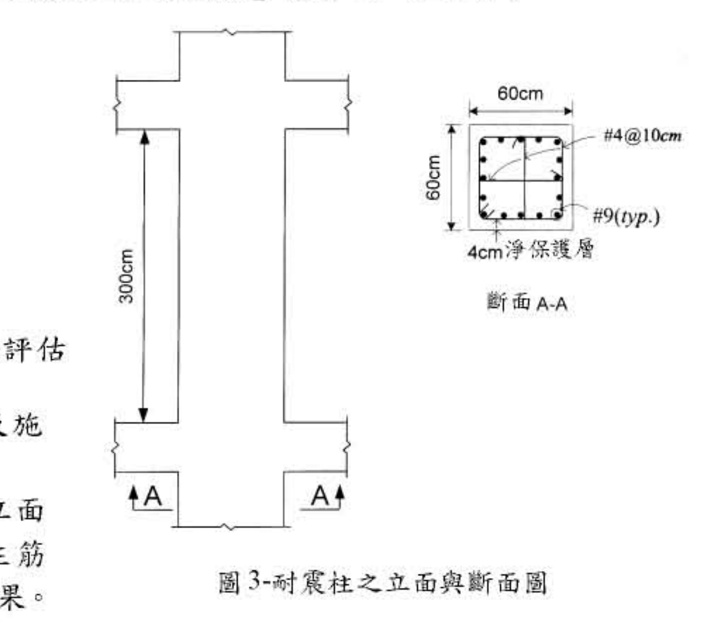
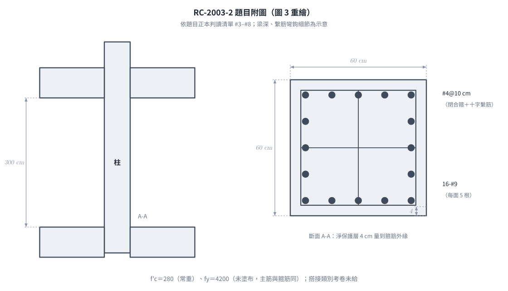
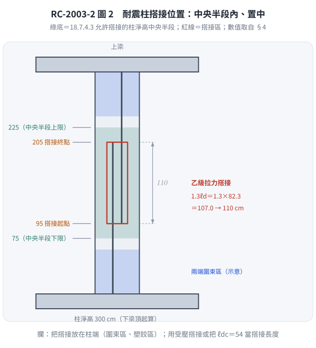

📄 題目正本：考卷原文・附圖・判讀清單（已確認）
RC-2003-2 題目正本
本檔只記錄考卷上寫了什麼、圖上畫了什麼，不含任何解法。解析見同資料夾
RC-2003-2.md。
判讀清單已經確認（凍結）；本檔原則上不再修改（改動須回考卷原圖並記 log）。
| 項目 | 內容 |
|---|---|
| 考卷 | raw/exams/RC-2003_鋼筋混凝土設計與預力.pdf 全一張（考卷為單頁掃描影像，正面），第二題 |
| 考年 | 民國 92 年（2003） |
| 配分 | 20 分 |
| 附圖 | RC-2003-2-fig-2.png（圖 3：耐震柱之立面與斷面圖；2026-11-15 由考卷掃描影像重新擷取 288 dpi，考卷原始掃描約 96 dpi）；既有 RC-2003-2-fig-1.png 為同一圖，左下梁旁有滑鼠游標，保留不刪；新圖左緣夾帶左欄題文殘字，不影響判讀 |
| 判讀狀態 | 已確認（2026-11-15 使用者授權依 Claude 建議確認；轉錄 2026-11-15；考卷為掃描影像、無文字層；原始解析度約 96 dpi，全頁與局部 5 倍放大目視；盲讀後才比對既有解析） |
1. 考卷原文（逐字）
二、有一耐震鋼筋混凝土柱之立面及斷面情況如圖 3 所示，若欲執行柱主筋之搭接設計，試按民國 92 年 1 月 1 日生效，由營建雜誌社發行之「結構混凝土設計規範」設計之。（20 分）
已知條件：
㈠ $f'_c=280kgf/cm^2$，常重混凝土
㈡ $f_y=4{,}200kgf/cm^2$，未塗布鋼筋
㈢柱配置 16 根 #9 鋼筋，$d_b=2.87cm$，$A_b=6.47cm^2$
㈣#4 鋼筋，$d_b=1.27cm$，$A_b=1.27cm^2$
㈤限用 $\lambda_d=\dfrac{0.28d_bf_y}{\sqrt{f'_c}}(\alpha\beta\lambda)\dfrac{d_b}{c+K_{tr}}$ 之詳細計算法評估
㈥搭接鋼筋組之設計須利於柱穿插繫筋之排置及施工中柱鋼筋籠之剛度考慮。試估算柱主筋所需之搭接長度 $\lambda_d$ 之值，並於柱立面圖標示柱主筋之搭接位置及長度，且須繪製柱主筋搭接處之柱斷面圖，以詳示柱主筋搭接之設計結果。
（考卷以 $\lambda_d$ 表示伸展長度與搭接長度，照考卷原文。）
2. 考卷給的公式、附表與參數
- 已知條件㈠–㈥：見 §1（照錄）。
- 伸展長度式（照錄，限用）：$\lambda_d=\dfrac{0.28d_bf_y}{\sqrt{f'_c}}(\alpha\beta\lambda)\dfrac{d_b}{c+K_{tr}}$；式中 $\alpha$、$\beta$、$\lambda$、$c$、$K_{tr}$ 定義與上限考卷沒有給。
- 圖 3：柱斷面 60×60 cm；16-#9（typ.）；#4@10 cm；4 cm 淨保護層；立面柱淨高 300 cm（上下梁之間）。
- 指定規範：民國 92 年 1 月 1 日生效之「結構混凝土設計規範」（營建雜誌社發行）。
- 沒有給：搭接類別（甲／乙級）、搭接處同斷面搭接比例、柱軸力與彎矩、#4 的 $f_{yt}$（題文 $f_y$＝4200 未區分主筋或箍筋）、繫筋實際位置以外的資訊。
- 卷首注意事項：㈠不必抄題，作答時請將試題題號及答案依照順序寫在試卷上，於本試題上作答者，不予計分。㈡可以使用電子計算器，但需詳列解答過程。
3. 附圖

圖面文字照錄：300cm、A、A、60cm、60cm、#4@10cm、#9(typ.)、4cm 淨保護層、斷面 A-A、圖 3-耐震柱之立面與斷面圖。
4. 判讀清單
「把握」標不確定者優先列；解讀類項目（題目用字的意思）另標「解讀」。標「依 Claude 建議確認」者，為使用者 2026-11-15 授權「要我確認的請依你建議」後定案。
| # | 項目 | 判讀 | 圖上／題文依據 | 把握 |
|---|---|---|---|---|
| 1 | #4 的 $f_{yt}$ | 題文 $f_y$＝4200 未區分，主筋與 #4 箍筋皆取 4200 | 已知條件㈡只給一個 $f_y$ | 確定（解讀）；依 Claude 建議確認 |
| 2 | 搭接類別 | 考卷沒有給；耐震柱主筋搭接依規範（全數於同一斷面搭接時為乙級），須明列 | 題文未提 | 確定（解讀） |
| 3 | 4 cm 淨保護層 | 量到 #4 箍筋外緣 | 斷面 A-A 引線指向底邊箍筋外側；「淨」保護層 | 確定（解讀） |
| 4 | 繫筋 | #4，一支垂直、一支水平，在斷面中央呈十字，鉤住各面中間筋 | 斷面 A-A 十字線（掃描約 96 dpi，彎鉤細節不清） | 確定（解讀） |
| 5 | 柱淨高 | 300 cm（上方梁底到下方梁頂） | 立面 300cm 尺寸線上下端分別對齊上梁底、下梁頂 | 確定 |
| 6 | 斷面 | 60×60 cm | 斷面 A-A 60cm 水平、垂直尺寸對齊外緣 | 確定 |
| 7 | 主筋 | 16-#9，每面 5 根（含角筋） | 斷面 A-A 數點：上 5、下 5、左右中間各 3；題文「16 根 #9」 | 確定 |
| 8 | 箍筋 | #4@10 cm 閉合箍 | 斷面標註 | 確定 |
| 9 | 所求 | 搭接長度、立面上的搭接位置與長度、搭接處斷面圖 | 題文 | 確定 |
| 10 | 規範版本 | 考卷指定民國 92 年版並限用其詳細式；依根目錄 CLAUDE.md 主線用現行規範，題目印出的式子依現行規範換用並在 §5 對照 | 題文 | 確定 |
| 11 | 考卷沒有給 | 搭接類別、同斷面搭接比例、柱內力 | 全題 | 確定 |
轉錄：2026-11-15（RC-U3-3 批 2＋U1-3＋U2-3 題目正本推廣）
確認：2026-11-15 使用者授權依 Claude 建議確認（RC-U3-3 批 2＋U1-3＋U2-3 題目正本推廣，關卡一）
考題編號：RC-2003-2
主分類： RC-U2-3 鋼筋錨定長度與斷點計算
副分類： RC-U3-3 韌性要求與耐震設計
設計法： USD
標籤： 耐震柱 搭接長度 詳細計算法 c值計算 Ktr橫向鋼筋指標 乙級拉力搭接 Class B搭接 中段1/2限制 方形柱16-#9
1. 題目（考卷原文見題目正本）
考卷原文、公式／附表、附圖與判讀清單（已確認）見
RC-2003-2-problem.md。本節只列解題時最容易讀錯的地方與本解使用的記號；題意以題目正本為準。

重繪自考卷圖 3，依題目正本判讀清單 #3–#8。本圖攔下的讀錯：保護層量到主筋；300 cm 當層高。
常見誤讀
| 項目 | 正確判讀 | 常見誤讀 |
|---|---|---|
| 淨保護層 4 cm | 量到 #4 箍筋外緣 | 量到主筋 |
| #4 的 $f_{yt}$ | 題文只給一個 $f_y$＝4200，主筋與箍筋同 | 箍筋取 2800 |
| 柱淨高 | 300 cm（上梁底至下梁頂） | 樓層高 |
| 搭接類別 | 考卷沒有給，依規範判定並明列（全數同斷面搭接 → 乙級） | 當作題目已知 |
| 指定規範 | 考卷指定民國 92 年版並限用其詳細式（0.28 係數）；主線依現行規範 25.4.2.4 式（$1/3.5$ 係數），舊式降為 §5 對照 | 沿用舊式 |
| $K_{tr}$ | $40A_{tr}/(sn)$（＝$A_{tr}f_{yt}/(105sn)$，$f_{yt}$＝4200 時相同）＝2.03～3.05 | $A_{tr}f_{yt}/(10sn)$＝21.3（本庫舊解，係數錯） |
| 受壓搭接 | $0.0071f_yd_b$＝85.6 cm；54 cm 是受壓伸展長度 $\ell_{dc}$ | 把 $\ell_{dc}$ 當受壓搭接長度（本庫舊解） |
本解記號： 60×60 cm；16-#9（$d_b$＝2.87 cm）；#4@10 cm（$d_b$＝1.27 cm）；淨保護層 4 cm；柱淨高 300 cm；$f'_c$＝280、$f_y$＝$f_{yt}$＝4200 kgf/cm²（常重、未塗布）。規範：建築物混凝土結構設計規範（2023 年版，ACI 318-19 世代）25.4.2.4（伸展長度）、25.5.2（拉力搭接）、25.5.5（受壓搭接）、18.7.4.3（耐震柱搭接位置）。
2. 考題核心精神與出題者意圖
核心觀念： 考生必須正確計算 $c_b$（保護層／半中心距取小）與橫向鋼筋指標 $K_{tr}$，判斷 $(c_b+K_{tr})/d_b$ 是否觸及 2.5 上限，才能得到「詳細計算法」的 $\ell_d$。耐震柱的搭接位置限制（柱淨高中央半段）與「須以拉力搭接設計」是另一個考點。
出題者測驗：
- 正確計算 $c_b$（保護層至筋心 vs. 半中心距，取小）
- 正確計算 $K_{tr}$（橫向鋼筋面積、間距、根數 $n$）
- 判斷是否觸及 $(c_b+K_{tr})/d_b = 2.5$ 上限
- 耐震柱搭接：乙級拉力搭接 $1.3\ell_d$，位置在柱淨高中央半段
3. 解題戰略地圖與陷阱分析
計算步驟：
- 確認柱內鋼筋排列（每面 5 根）→ 計算中心距
- 計算 $c_b$
- 計算 $K_{tr}$（確認 $A_{tr}$ 與 $n$ 的意義）
- 判斷 $(c_b + K_{tr})/d_b \le 2.5$
- 代入現行式得 $\ell_d$
- 乙級拉力搭接：$\ell_{st} = 1.3\,\ell_d$
- 定搭接位置（中央半段）並畫斷面
關鍵陷阱：
| # | 陷阱 | 說明 |
|---|---|---|
| ① | 每面幾根鋼筋 | 16 根在 60 cm 柱：每面 5 根（含兩端角筋），中心距 = 46.59/4 = 11.65 cm |
| ② | $c_b$ 取兩者較小值 | 保護層至筋心 6.705 vs. 半中心距 5.824 |
| ③ | $K_{tr}$ 係數 | kgf 制 $A_{tr}f_{yt}/(105sn)$ 或 $40A_{tr}/(sn)$；不是 $/(10sn)$ |
| ④ | 耐震柱搭接必須用拉力搭接 | 規範 18.7.4.3：只准在柱淨高中央半段、以拉力搭接設計 |
| ⑤ | 考卷舊式係數 0.28 | 現行式 $f_y/(3.5\lambda\sqrt{f'_c})$，相當於係數 0.286，結果大 2% |
3.5 變數層次分析（Variable Hierarchy Analysis）
複習提示：第一次解題後，在每個卡住的知識點旁標記
⚠；第二次複習時只看有⚠的項目。
最終目標
求耐震柱 16-#9 主筋之拉力搭接長度 $\ell_{st}$，並指定搭接位置。
本題關鍵公式（依計算順序）
$$\text{Step 1: } c_b = \min\!\left(c_{cover},\ \frac{s_{cc}}{2}\right)$$
$$\text{Step 2: } K_{tr} = \frac{40A_{tr}}{s\,n}$$
$$\text{Step 3: 判斷} \quad \frac{c_b + \boxed{K_{tr}}}{d_b} \le 2.5$$
$$\text{Step 4: } \ell_d = \frac{f_y}{3.5\lambda\sqrt{f'_c}}\cdot\frac{\psi_t\psi_e\psi_s\psi_g}{\boxed{\dfrac{c_b+K_{tr}}{d_b}}}\,d_b \ \ge 30\text{ cm}$$
$$\text{Step 5: } \ell_{st} = 1.3\,\boxed{\ell_d} \quad (\text{乙級拉力搭接})$$
L1：題目直接給定
| 符號 | 數值 | 說明 |
|---|---|---|
| $b = h$ | 60 cm | 方形柱邊長 |
| $d_b$ | 2.87 cm | #9 主筋 |
| $d_{b,tie}$、$A_{b,tie}$ | 1.27 cm、1.27 cm² | #4 箍筋與繫筋 |
| $s$ | 10 cm | 箍筋間距 |
| 淨保護層 | 4 cm | 至箍筋外緣 |
| $f'_c$ | 280 kgf/cm² | 常重 |
| $f_y = f_{yt}$ | 4,200 kgf/cm² | 未塗布 |
| 柱淨高 | 300 cm |
L2：需知識點推導
| 符號 | 公式／來源 | 卡關? |
|---|---|---|
| 每面鋼筋根數 | 16 根 = 4 角 + 每面 3 中間筋 → 每面 5 根 | |
| $c_{cover}$ | $4 + 1.27 + 2.87/2 = 6.705$ cm | |
| $s_{cc}$ | $(60 - 2\times6.705)/4 = 11.65$ cm | |
| $c_b$ | $\min(6.705,\ 5.824) = 5.824$ cm | |
| $A_{tr}$ | 外箍 2 肢＋繫筋 1 肢 = $3\times1.27 = 3.81$ cm²（只計外箍 2.54） | |
| $K_{tr}$ | $40\times3.81/(10\times5) = 3.05$（2 肢 2.03） | |
| $(c_b+K_{tr})/d_b$ | $(5.824+3.05)/2.87 = 3.09 > 2.5$ → 取 2.5（2 肢 2.74，同樣取 2.5） | |
| $\psi_t\psi_e\psi_s\psi_g$ | 垂直筋 1.0、未塗布 1.0、#9 1.0、SD420 1.0 | |
| $\ell_d$ | $4200/(3.5\times16.733)\times2.87/2.5 = 82.3$ cm | |
| $\ell_{st}$（乙級） | $1.3\times82.3 = 107.0$ cm → 取 110 cm |
L3：深層知識（不懂就卡住）
| 知識點 | 說明 | 卡關? |
|---|---|---|
| $c_b$ 取兩者較小值 | 保護層劈裂與相鄰筋間劈裂，取較弱的一面 | |
| $K_{tr}$ 中的 $A_{tr}$、$n$ | $A_{tr}$：間距 $s$ 內穿越潛在劈裂面的橫向筋總面積；$n$：沿該劈裂面被伸展／搭接的鋼筋根數 | |
| 2.5 上限 | 超過後劈裂不再控制，改由拔出控制，再加橫向筋也無益 | |
| 耐震柱搭接 | 18.7.4.3：搭接只准在柱淨高中央半段，且以拉力搭接設計，並以 18.7.5.2–18.7.5.3 橫向筋包覆 | |
| 甲／乙級 | 同斷面搭接 > 50% 或 $A_{s,prov}/A_{s,req} < 2$ → 乙級 $1.3\ell_d$ |
4. 步驟化詳細計算過程
Step 1 斷面幾何：每面鋼筋根數與中心距
16 根 #9 均佈於 60×60 cm 柱四周：4 角筋 + 每面 3 根中間筋 → 每面 5 根。
$$c_{cover} = 4 + 1.27 + \frac{2.87}{2} = 6.705\ \text{cm}$$
$$s_{cc} = \frac{60 - 2\times6.705}{5-1} = \frac{46.59}{4} = 11.65\ \text{cm},\qquad \frac{s_{cc}}{2} = 5.824\ \text{cm}$$
$$\boxed{c_b = \min(6.705,\ 5.824) = 5.824\ \text{cm}}\quad\text{（間距控制）}$$
Step 2 橫向鋼筋指標 $K_{tr}$
潛在劈裂面沿柱的一面（5 根筋），穿越它的橫向筋為垂直該面的外箍 2 肢＋十字繫筋 1 肢：
$$A_{tr} = 3 \times 1.27 = 3.81\ \text{cm}^2,\qquad n = 5$$
$$K_{tr} = \frac{40A_{tr}}{s\,n} = \frac{40\times3.81}{10\times5} = 3.05\ \text{cm}$$
（kgf 制另一寫法 $A_{tr}f_{yt}/(105sn)$＝$3.81\times4200/5250$＝3.05，相同；只計外箍 2 肢時 2.03。）
Step 3 判斷 $(c_b+K_{tr})/d_b$
$$\frac{c_b+K_{tr}}{d_b} = \frac{5.824+3.05}{2.87} = 3.09 > 2.5 \quad\Rightarrow\quad \boxed{\text{取 } 2.5}$$
（只計外箍 2 肢：$(5.824+2.03)/2.87 = 2.74 > 2.5$，同樣取 2.5。）
Step 4 修正係數
| 係數 | 意義 | 本題取值 |
|---|---|---|
| $\psi_t$ | 澆置位置（下方新拌混凝土 > 30 cm 之水平筋） | 1.0（垂直柱筋） |
| $\psi_e$ | 環氧樹脂塗布 | 1.0（未塗布） |
| $\psi_s$ | 鋼筋尺寸（D19 以下 0.8） | 1.0（#9） |
| $\psi_g$ | 鋼筋等級 | 1.0（SD420） |
| $\lambda$ | 輕質混凝土 | 1.0（常重） |
Step 5 伸展長度 $\ell_d$（現行 25.4.2.4）
$$\ell_d = \frac{f_y}{3.5\lambda\sqrt{f'_c}}\cdot\frac{\psi_t\psi_e\psi_s\psi_g}{(c_b+K_{tr})/d_b}\,d_b = \frac{4200}{3.5\times16.733}\times\frac{1.0}{2.5}\times2.87 = 71.71\times\frac{2.87}{2.5} = \boxed{82.3\ \text{cm}}$$
檢核最小值：$82.3 > 30\ \text{cm}$ ✓
Step 6 搭接長度（乙級拉力搭接）
- 規範 18.7.4.3：耐震柱主筋搭接須以拉力搭接設計
- 16 根全部在同一區段搭接（100% > 50%）→ 乙級，$\ell_{st} = 1.3\ell_d$
$$\boxed{\ell_{st} = 1.3\times82.3 = 107.0\ \text{cm} \to \text{取}\ 110\ \text{cm}}$$
Step 7 搭接位置（規範 18.7.4.3）
搭接只准在柱淨高中央半段：$300/4 = 75$ cm 至 $3\times300/4 = 225$ cm（距下梁頂）。
採用：搭接置中於柱高中點，95～205 cm（$150 \pm 55$），兩端距中央半段邊界各 20 cm，亦避開兩端圍束區。
| 位置 | 距下梁頂 |
|---|---|
| 中央半段下限 | 75 cm |
| 搭接起點 | 95 cm |
| 搭接終點 | 205 cm |
| 中央半段上限 | 225 cm |
立面圖示意（文字版）：
─────── 上梁 ───────
┆ ┆ 300 cm 淨高
┆ ┆ ← 225 cm（中央半段上限）
┆ ╔═══════════╗ ┆ ← 搭接終點 205 cm
┆ ║ ℓst=110cm ║ ┆
┆ ╚═══════════╝ ┆ ← 搭接起點 95 cm
┆ ┆ ← 75 cm（中央半段下限）
─────── 下梁 ───────

圖 2 搭接只能放在柱淨高中央半段，本題 110 cm 搭接置中後兩端各留 20 cm 餘裕。攔的是把搭接放在柱端（圍束區、塑鉸區）、改用受壓搭接，或把受壓伸展長度 $\ell_{dc}$＝54 cm 當成搭接長度。
Step 8 搭接處斷面
於搭接區（95～205 cm），斷面配置：
- 每面 5 根主筋各與一根搭接筋沿柱面內側並排（接觸搭接），使中間筋仍位於同一軸線上，十字繫筋可照常鉤住各面中間筋，利於繫筋穿插（已知條件㈥）
- 搭接筋組之間淨距 ≥ $\max(1.5d_b,\ 4\text{ cm},\ \tfrac43d_{agg})$（柱縱筋，25.2.3；接觸搭接組與相鄰鋼筋之淨距亦適用）：每面 5 組、每組寬 $2d_b$＝5.74 cm，中心距 11.65 cm → 淨距 ≈ 11.65 − 5.74 = 5.9 cm ≥ 4.31 ✓
- 箍筋 #4@10 cm 與十字繫筋貫穿全搭接區，維持鋼筋籠剛度
5. 關鍵爭議點與進階探討
1. 考卷限用舊式（民國 92 年版）對照
| 項目 | 考卷舊式 $0.28d_bf_y/\sqrt{f'_c}\cdot\alpha\beta\lambda\cdot d_b/(c+K_{tr})$ | 現行 25.4.2.4（主線） |
|---|---|---|
| 係數 | 0.28 | $1/3.5 = 0.286$ |
| $\ell_d$ | 80.7 cm | 82.3 cm |
| 乙級搭接 | 104.9 → 105 cm | 107.0 → 110 cm |
差 2%。考場若依題目限用舊式，答 105 cm；兩式的 $c$、$K_{tr}$ 定義與 2.5 上限相同。
2. 舊解的 $K_{tr}$ 係數錯誤（不影響答案）
舊解寫 $K_{tr}=A_{tr}f_{yt}/(10sn)$＝21.3（係數 10 錯，應為 105；或用 $40A_{tr}/sn$）。正確 $K_{tr}$＝2.03（2 肢）～3.05（3 肢）；因 $(c_b+K_{tr})/d_b$ 已達 2.5 上限，答案不變，但「$K_{tr}$ 遠大於 $c$」的敘述是錯的——本題其實是 $c_b$ 已接近上限、$K_{tr}$ 補足。
3. 為何不用受壓搭接？
$$\ell_{sc} = 0.0071f_yd_b = 0.0071\times4200\times2.87 = 85.6\ \text{cm}\ (\ge 30)$$
舊解寫的 54 cm 是受壓伸展長度 $\ell_{dc}=\max(0.075f_y/\sqrt{f'_c},\ 0.0044f_y)\,d_b$，不是受壓搭接長度。無論如何，規範 18.7.4.3 規定耐震柱須以拉力搭接設計，不得採受壓搭接。
4. 搭接區的橫向鋼筋
18.7.4.3 要求搭接區以 18.7.5.2–18.7.5.3 的橫向鋼筋包覆；本題 #4@10 cm 閉合箍＋十字繫筋已滿足（$s$＝10 ≤ min(b/4＝15, $6d_b$＝17.2, $s_o$)）。
修正日期：2026-11-15（§1 改為指向題目正本，插入重繪附圖 figs/RC-2003-2-fig-1-problem.svg；舊 §1 重述改寫為常見誤讀與本解記號；本行非答案勘誤）
修正日期：2026-11-15（改依現行台灣規範（建築物混凝土結構設計規範 2023／耐震規範 111）：伸展長度改 25.4.2.4 式 $f_y/(3.5\lambda\sqrt{f'_c})$，$\ell_d$ 80.7 → 82.3 cm、乙級搭接 104.9（取 105）→ 107.0（取 110）cm，搭接位置改置中 95～205 cm；$K_{tr}$ 式 $/(10sn)$＝21.3 → $40A_{tr}/(sn)$＝3.05（2 肢 2.03），不影響 2.5 上限；§5 受壓搭接 54 → $0.0071f_yd_b$＝85.6 cm（54 為 $\ell_{dc}$）；考卷 0.28 舊式降為 §5 對照；驗證：.work/u33b2c/check_errata_U3_3_B2.py 重算 MISMATCHES: 0）
修正日期：2026-11-15（落實檢查 RECHECK-RC-U3-3-B2 輕微殘留修正，非勘誤，數值與答案不變：Step 8 搭接筋組淨距限值由梁的 $\max(d_b, 2.5)$ 更正為柱的 $\max(1.5d_b, 4\text{ cm})$＝4.31 cm，仍符合）
圖解補繪：2026-11-15（向量圖 figs/RC-2003-2-fig-2-lap.svg，腳本 figs/gen_RC-2003-2.py，可重跑；數值由常數現算並於檔尾 assert 對 §4；DIAG-RC-U3-3-B2）